VALLEYTECH / DETECTION / HUNT EDITION / 0.13.9
Carry your
radar.
Twenty-nine complete themes. A little more awareness.
Axon priority alerts, signal hunts, and local history.
Your pocket radar, with evidence behind every match.
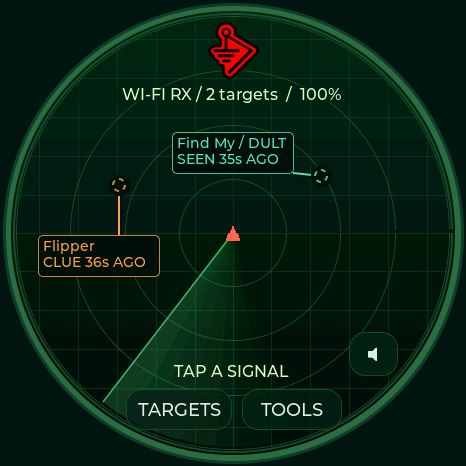
ACTUAL M5STACK DISPLAY RENDER · 0.9.1
Notice the signal.Fresh candidate signatures, with evidence.
Follow the change.Filtered RSSI and background-aware hunting.
Keep the evidence.Local history, watch lists, and USB CSV export.
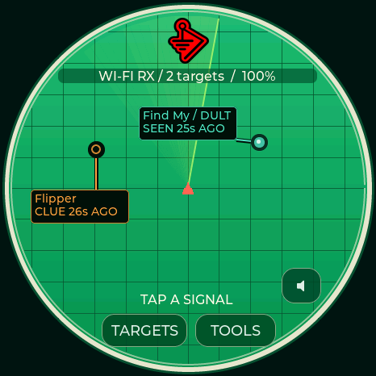
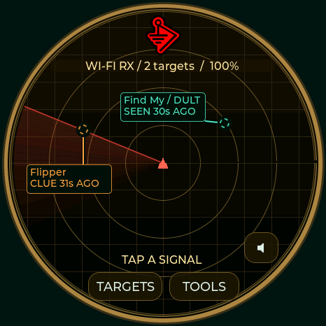
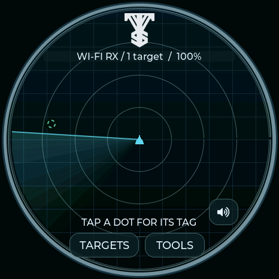
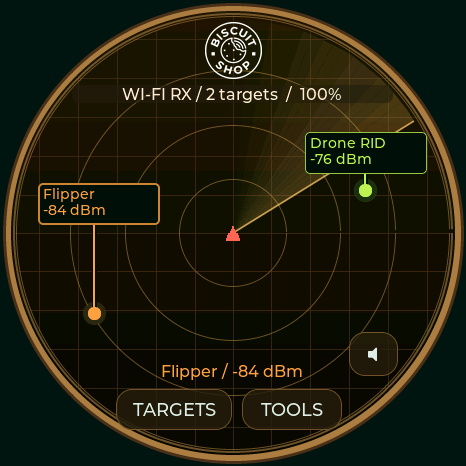
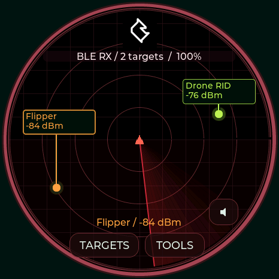
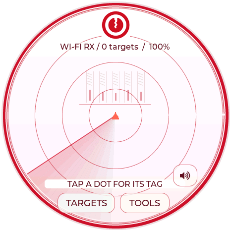
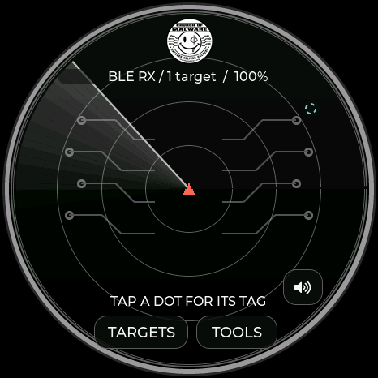
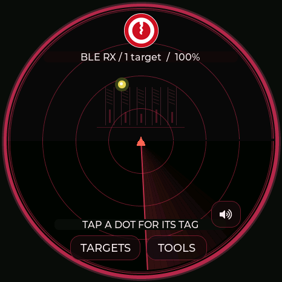
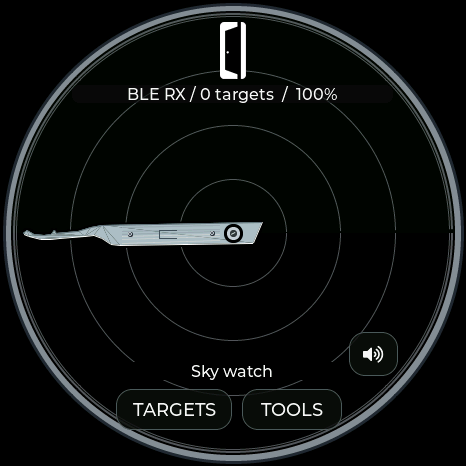
0.13.9 · Ghostbusters. Lockpickers United. Five Lite pages. Saved Wi-Fi clock recovery. Twenty-nine themes color the entire GUI. Twenty-seven logo watches on full boards, including a no-ghost containment dial and a monochrome LPU dial with silver pick hands and moving pin seconds. LPU also adds a Locksport Timer with pins that stop on PAUSE and OPEN. Lite gains compact themed clocks, stopwatch/locksport timing, signal inspection and diagnostics, all operated with BOOT. Spotpear keeps time through a powered software restart; optional saved Wi-Fi restores Internet time after complete power loss. Every board shares the new VTS logo-only boot animation. Lossless logo compression makes room without reducing artwork quality. Explore locksport → Watch gallery →
01 / GET STARTED
One radar. Five profiles.
Desktop Chrome or Edge · USB data cable
Select the exact board/display combination. XIAO uses its own 8 MB layout.
Choose Update matching Dragon Detector to preserve files and settings. Full-board labs are available in 0.13. Lite has five button-operated pages and compact clock faces. Current and earlier hardware checks are documented in the validation notes.
Lite has five pages: radar, compact themed clock, stopwatch/locksport timer, signal details and diagnostics. Tap BOOT for the page action; double-tap for lap/OPEN/reset; hold to change pages. All 29 themes are available. No touch, badge, audio or active labs. Waveshare ESP32-S3-LCD-1.28, not the touch version, XIAO or 1.75C AMOLED. Lite hardware & recovery →
Choose your board above
Each model needs its own firmware. The ESP32-S3 chip check cannot identify your display wiring.
Select a board to see its storage options.
Full boards share the radar and lab toolset; hardware controls and capacity differ.
Compare all five profiles →Close the installer when finished to let automatic time setup run.
Download firmware + SHA-256Select a board to load its release.
- Choose the exact hardware above and connect it with a USB data cable.
- Choose Update for a compatible existing Dragon Detector installation. Choose Fresh for a new board; it replaces saved files.
- Confirm, connect and install. Wait for verification, reset if needed, then close the installer and wait for local-time verification before using Badge Studio.
Full flashing guide, update compatibility and recovery →
Connection & recovery
Close other serial monitors before connecting. On M5Stack StopWatch, hold the power button for about two seconds until the green LED lights, then release. On Spotpear/Waveshare/XIAO, hold BOOT, tap RESET, release BOOT, then reconnect. Select the matching USB port. A first installation initializes the badge filesystem; back up existing firmware before replacing it. Use Update only with this board's existing 0.3.x–0.13.x partition layout. XIAO Round updates require its own 0.9.2-or-newer 8 MB layout. Lite updates require the exact 0.9.4+ Lite layout; an older third-party port must be backed up and its partitions verified, or use Fresh installation. The Lite board uses its CH343 USB serial port. Reset after installation if the board stays in the bootloader.
HARDWARE / FEATURE COMPARISON
Choose what fits.
All five use the same detection engine. The four full boards share the interactive radio and BLE tools.
| Feature | Waveshare AMOLED | M5Stack StopWatch | Spotpear | XIAO Round | Waveshare Lite |
|---|---|---|---|---|---|
| Flash | 32 MB | 16 MB | 16 MB | 8 MB | 16 MB |
| SD slot / controls | None | None | Optional CSV/PCAP + browser | Optional CSV/PCAP + browser | None |
| Internal user storage | 3.94 MiB + 16 MiB recon | 7.94 MiB shared | 3.94 MiB shared | 1.94 MiB shared | No file features |
| Themes / badge / stopwatch / labs | All | All | All | All | 29 themes / compact clock + timing |
| Sound | Speaker connector | Speaker + haptics | Speaker connector | Visual alerts | Visual alerts |
| Clock | RTC | RTC | Software | RTC | Software + USB sync |
Storage figures are partition allocations before overhead, not current free space. Builds and new file writes retain a 21% reserve. See validation notes for per-board runtime checks and remaining hardware limits. Complete hardware guide →
GHOSTBUSTERS + LOCKPICKERS UNITED / 0.13.9
No ghosts. Just picks.
A proton stream scans the Ghostbusters field. LPU celebrates the original lockpick emblem in black and silver. Sixty rim pins lift to mark seconds, and its Locksport Timer freezes them when an attempt pauses or opens.
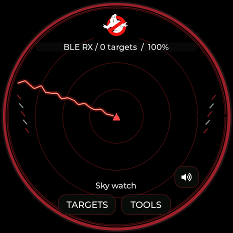
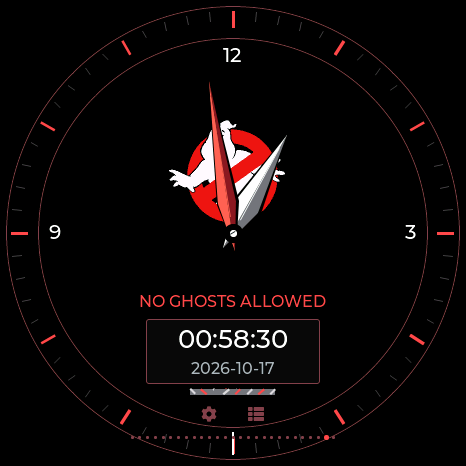
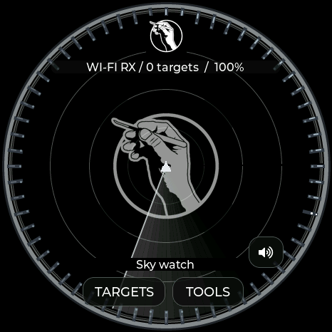
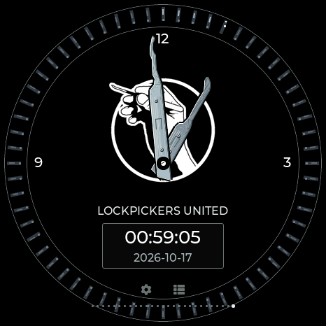
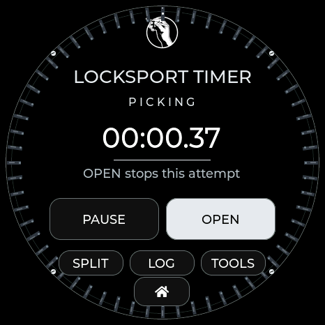
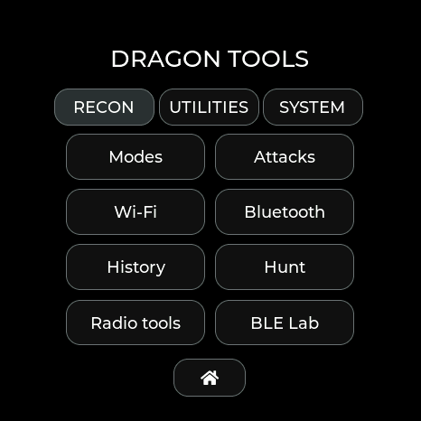
Native 466-pixel Waveshare framebuffer captures. Matching panel-size art is built for all four full boards. Lite has compact logo clock/timer layouts. Rim pins and proton effects are decoration; signal positions do not measure bearing or distance.
COVERT INSTRUMENTS × LOCKPICKINGLAWYER / 0.13.8
A balanced approach.
Navy enamel. Warm gold. Polished picks. The CI mark crowns the radar, while the original LockPickingLawyer seal anchors the center. Two golden scale pans rotate around it, with live signals and labels above.
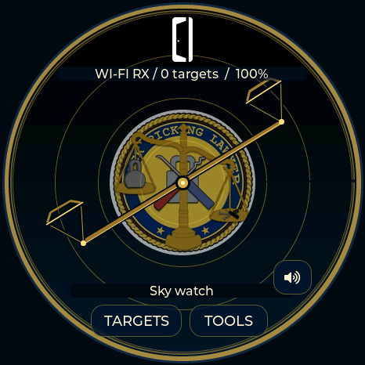
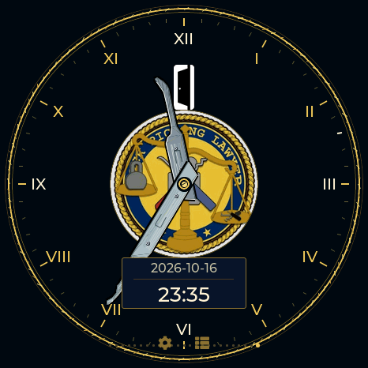
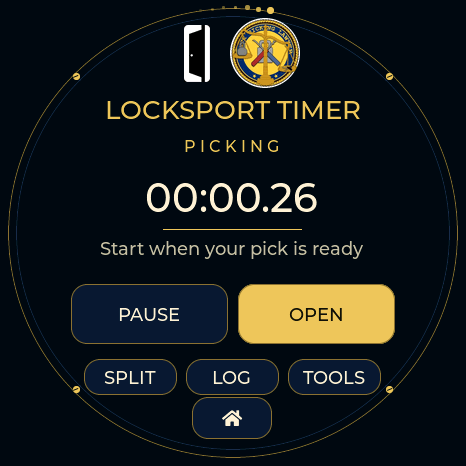
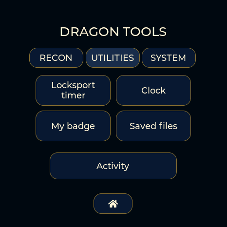
A rope-like gold bezel and Roman chapter ring frame the dual-logo watch. The Reaper short hook tells hours; the McTickler tells minutes. Date and 24-hour time stay readable below. START / PAUSE, SPLIT, OPEN and LOG work just like the McNally timer, with an orbiting gold rim indicator while counting. Navy and gold continue through every menu and dialog.
Actual firmware display captures. The scales are decorative, not measured direction. Full theme, watch and timer on all four full boards; Lite includes both radar logos and scales. Supplied marks retain their original artwork; no affiliation or endorsement is implied.
LOCKSPORT COLLECTION / ALL FOUR FULL BOARDS
Pick. Split.
Open.
Six branded themes, each with its own watch and full interface palette. START / PAUSE controls your attempt. SPLIT records a milestone. OPEN records the final split and stops. LOG keeps the latest 50 splits until reset or reboot. DMAC calls it Locksport Counter; TOOOL and Covert use Locksport Timer.
LPU uses sixty moving pin positions for elapsed seconds; the other locksport themes use a comet circling the rim every ten seconds. PAUSE/OPEN freezes it; RESET returns it to the top.
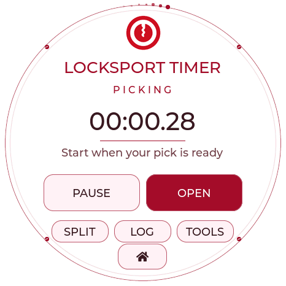
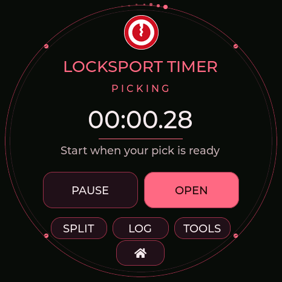
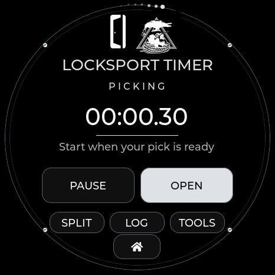
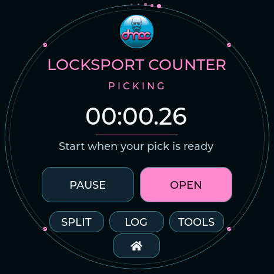
Actual Waveshare display renders. The same controls and panel-sized artwork are included for Seeed XIAO + Round Display, Spotpear / Guition and M5Stack StopWatch.
DMAC / 0.13.6
DMAC.
Teal, pink, charcoal and silver. Two acrylic McTickler profiles with copper inlays and pearl rivets tell the time; Utilities becomes Locksport Counter. The palette carries through the full interface.
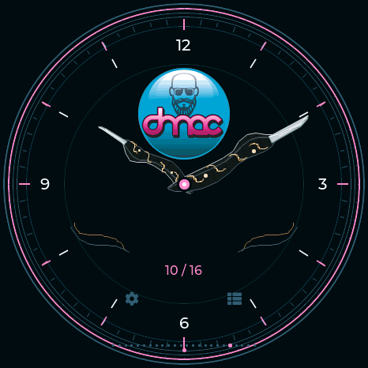
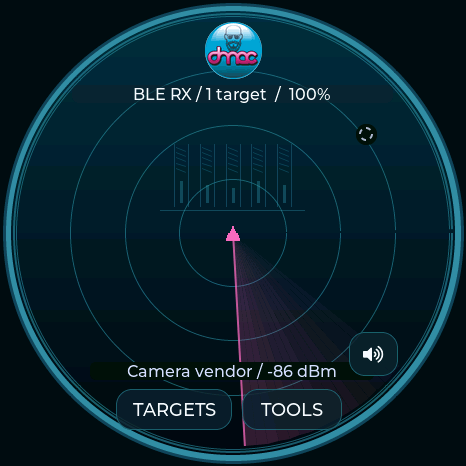
Native display-buffer captures from the Waveshare. Motion runs on the device.
Choose this theme →NYAN DEVICES / 0.13.6
Nyan Devices.
The original logo colors run through the dial and menus. A pixel Nyan Cat flies across the radar with a moving rainbow trail. The palette carries through the full interface.
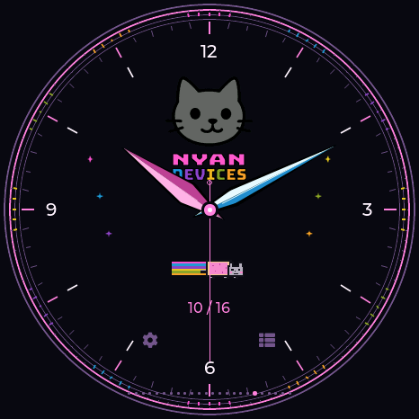
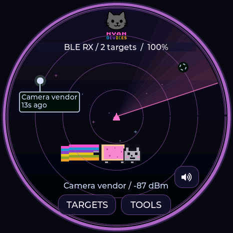
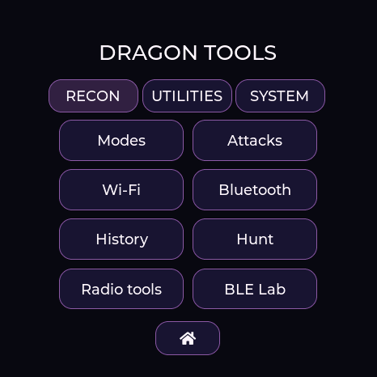
Native display-buffer captures from the Waveshare. Motion runs on the device.
Choose this theme →TALKING SASQUACH / 0.13.6
Talking Sasquach.
The cartoon becomes a character watch: furry arms and pointing hands tell the time. The portrait head appears on the forest radar. The palette carries through the full interface.
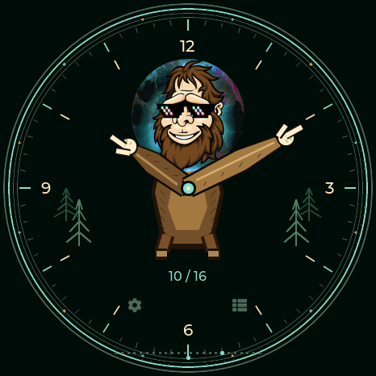
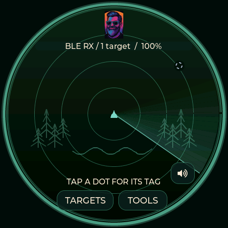
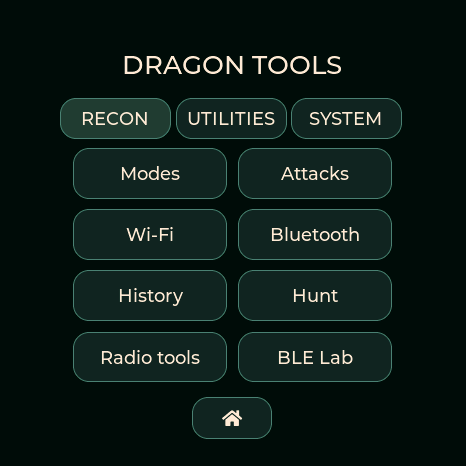
Native display-buffer captures from the Waveshare. Motion runs on the device.
Choose this theme →LAB5 / 0.13.6
LAB5.
Original scientist artwork, cyan and magenta circuits and large 12-hour digital time. The palette carries through the full interface.
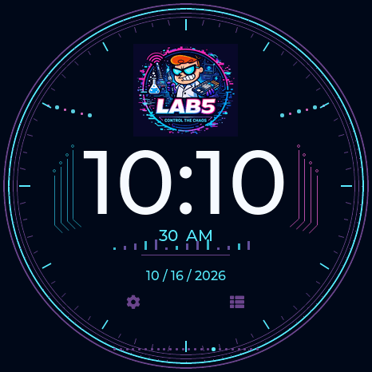
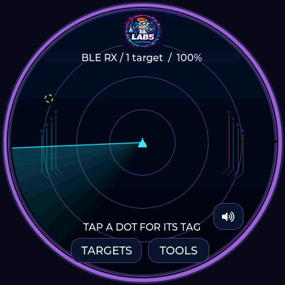
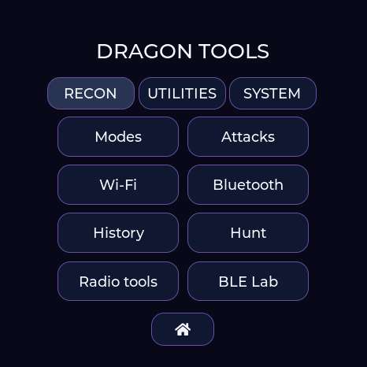
Native display-buffer captures from the Waveshare. Motion runs on the device.
Choose this theme →M5STACK / 0.13.6
M5Stack.
Original blue and white logo, modular dial and a separate 12-hour digital window. The palette carries through the full interface.
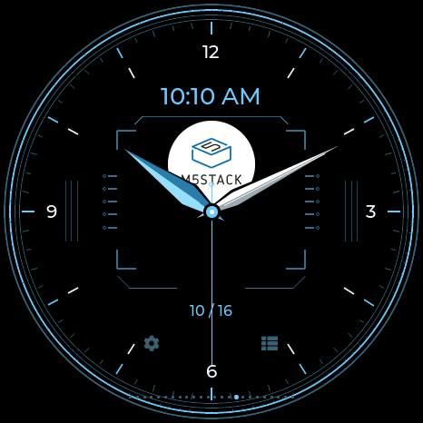
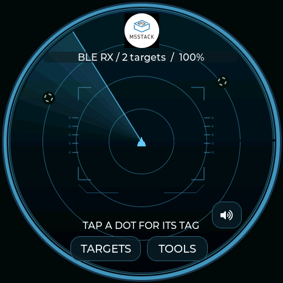
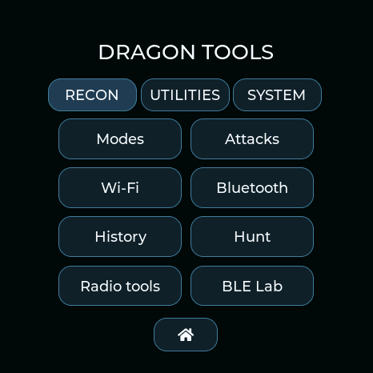
Native display-buffer captures from the Waveshare. Motion runs on the device.
Choose this theme →HALEHOUND / 0.13.6
Time in the
hellfire.
Both original logos. A black dial edged in hot pink and violet, with living flames and rising embers. Sculpted hands and Roman numerals keep the time clear. The matching hellfire radar draws signals above the flames, while every menu follows the palette.
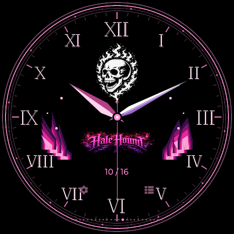
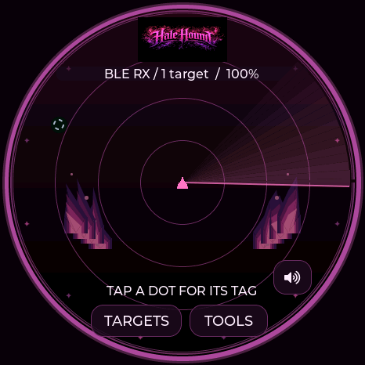
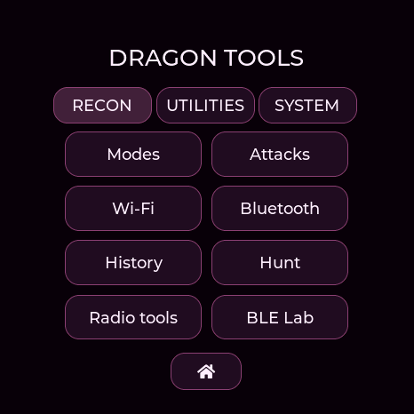
These are still captures from the Waveshare. Flames animate on the device independently of clock changes.
Choose HaleHound →GHOSTSTRATS / N3RDSEC / 0.13.6
After dark.
In fine detail.
Glowing purple slit eyes and the GhostStrats tagline, “Safety is an Illusion.” N3rdsec’s original skull in black, white and gold. Two distinct analog watches with broad sculpted hands and matching radars. Each palette follows you through the complete interface.
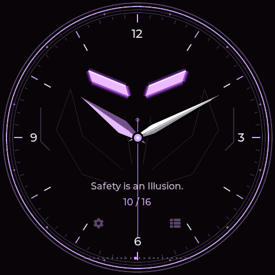
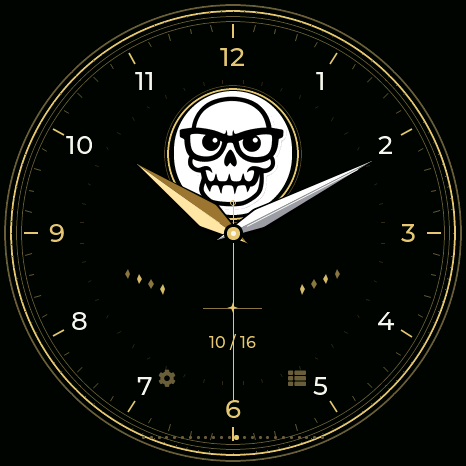
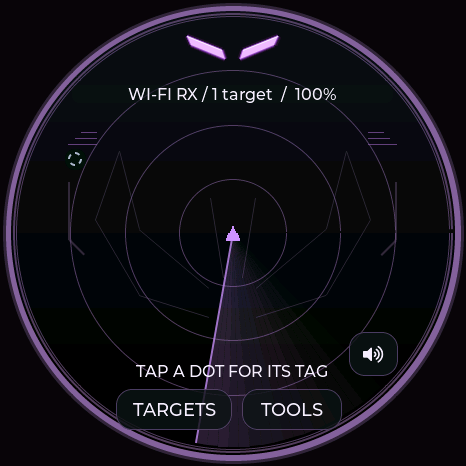
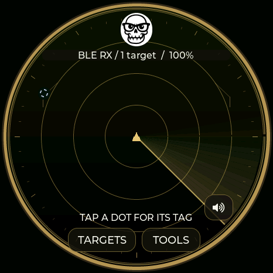
NEW COMMUNITY THEMES / 0.13.6
Three worlds.
Your time.
AWOK neon paint. Baph0Mau5 occult engraving. WDGWARS global signals. Original supplied logos, twelve-hour analog faces, and matching colors across the entire device GUI. The shared VTS logo greets you at startup.
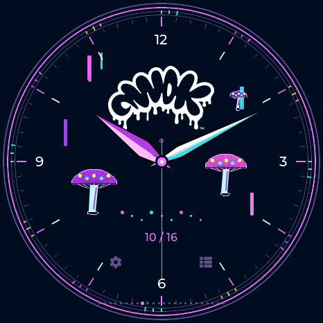
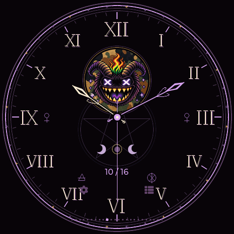
COMMUNITY COLLECTION / 0.13.6
AWOK
Midnight ink, neon paint drips, mushrooms and the original dripping logo. Bright, sculpted analog hands keep the time clear. The theme continues through menus, settings and stopwatch.
COMMUNITY COLLECTION / 0.13.6
Baph0Mau5
A violet ritual dial with the supplied emblem, engraved sigils, moon details, Roman numerals and ornate hands. The theme continues through menus, settings and stopwatch.
COMMUNITY COLLECTION / 0.13.6
WDGWARS
Black, cyan and magenta. A world-map analog dial, radio-wave accents and a matching map radar with the original logo. The theme continues through menus, settings and stopwatch.
COVERT INSTRUMENTS × MCNALLY / 0.13.6
Quiet precision.
Every second counts.
Black surfaces. Polished silver pick hands. Your original CI and McNally marks. The Reaper short hook keeps the hours; the longer McTickler keeps the minutes. A separate 24-hour window stays readable. The matching Locksport Timer records splits and stops on OPEN. Your theme follows you through menus and settings. A silver McTickler sweeps the radar. The supplied VTS logo fades in alone on white at boot.
Select Covert Instruments / McNally in Settings → Theme & radar labels, or save it below. Available on the four full boards; Lite uses compact clock and timing layouts.
Choose Covert Instruments →TOOOL / LOCKSPORT / 0.13.6
Every pin.
Every second.
Your TOOOL logo in two complete styles: white/red or near-black/red. Both include a radar, matching analog watch, and dedicated Locksport Timer. Choose TOOOL Dark for a dimmer look. Choose either in Settings → Theme & radar labels, or save it in Radar appearance below. The watch is selected for you; Utilities shows Locksport timer.
START begins an attempt. PAUSE / RESUME excludes breaks. SPLIT records a milestone; OPEN records and stops at the same instant. LOG keeps the latest 50 splits for this attempt. RESET asks before clearing them for your next lock. Results reset at reboot. Covert Instruments has Locksport Timer and DMAC has Locksport Counter. All four locksport themes have an orbiting comet while counting; PAUSE/OPEN freezes it, and RESET returns it to the top.
CHURCH OF MALWARE / 0.13.6
Read the bits.
Wear the emblem.
The complete Church of Malware emblem fills the center of a monochrome binary watch. The weighted lights around it show H, M and S: add the lit values in each group for hours, minutes and seconds. AM/PM belongs beside the hours. Select Church of Malware in Radar appearance or on your device to choose its radar and watch together.
White bits are on; dark bits are off. H uses 8, 4, 2, 1. M and S each use 32, 16, 8, 4, 2, 1. The hour uses 1–12, so midnight and noon both light 8 + 4; AM/PM distinguishes them. Analog faces now show just the date, without AM/PM beside it.
SEEED STUDIO / MAKER SERIES
Time to make.
The original Seeed Studio logo, lime accents and deep teal surfaces. Its unique analog watch combines leaf-shaped circuit traces, Arabic numerals and broad lime/silver hands. Matching radar, menus and controls are available on every full-feature board.
DAGNAZTY / WHITE ROOM
Silence in white.
An open white field, black accents and the supplied skull silhouette. A unique analog face carries tapered hands, fang details and restrained talon outlines. The radar and full interface share its monochrome palette.
0CT0’S PIG / ASCII AFTER HOURS
Oink. It’s time.
The pink octopus, re-created in ASCII from the supplied mark. A curious pixel-letter pig wanders left and right, looks around and tells the actual time in its moving speech bubble. Tap beside it for a reaction. Black, pink and monospaced lettering carry through the radar, menus and tools.
DEFLOCK / WATCH THE WATCHERS
Quietly observant.
The supplied camera-raven takes center stage in midnight navy and steel blue. A viewfinder frames the artwork above large 24-hour time; an optical scale tracks seconds around the rim. The same restrained palette follows you through the radar, menus and tools.
CLOCK COLLECTION / 0.13.9
Time, beautifully kept.
Twenty-seven faces. Original logos. Light and dark TOOOL dials, a full-emblem Church of Malware binary watch, a clean Arabic ValleyTech dial and large digital time. Swipe left or right on Clock to choose. Twelve-hour analog dials, JCMK military digital time, and the Covert hybrid’s 24-hour window. These are actual Waveshare firmware renders.
ON THE DEVICE / STORAGE CONTROLS
See your tools.
Actual Waveshare firmware renders, captured over USB and CRC-verified. Scroll on the device to reach additional settings and recording buttons.
Saved files opens the capture library on Waveshare and M5Stack. GATT profiles, BLE logs and detection history keep their own export controls. These are display renders, not panel photographs. GUI tour and navigation →
02 / FIELD TOOLS
Keep your radar ready.
Firmware 0.4.x or newer · local USB connection
No account or cloud upload.
History & device controls
Connect to automatically sync your local date and time. Download detection history, return to the radar, or adjust display timers. Detection keeps running when the screen dims or turns off.
Connect a board running 0.4.x or newer. CSV contains the full stored evidence; display privacy only masks the device screen.
Display preferences
Radar appearance
Clock & utilities
Firmware 0.9.x–0.13.x. Stopwatch keeps running when you leave its page. M5Stack, Waveshare and Seeed XIAO Round use their RTC when detected; Spotpear uses a software clock. In 0.13.9, powered software restarts retain time; complete power loss needs USB or saved Wi-Fi synchronization.
Connecting sets the date, time and timezone automatically. Resync after travel or a daylight saving change.
Set date and time manually
Connect firmware 0.9.x–0.13.x to read clock availability and saved orientation. UTC offsets are fixed; resync after daylight saving changes.
Fixed display orientation
Choose a fixed angle for your badge or desk. It is saved across restarts, and touch controls follow the display. Orientation changes only when you choose another angle.
03 / LISTEN TO THE SIGNAL
A sound for every signature.
Short, original alert melodies.
RTTTL settings saved on your detector.
Audio & foxhunting
Connect using Detector tools above. During a hunt, stronger signals produce higher, faster pulses. Axon has a double heartbeat; a falling two-note cue means the signal was lost. RSSI is not distance.
Focus follows the strongest matching candidate with switching hysteresis. Flock focus also includes ALPR vendors and Raven. A manually selected Hunt target takes priority. Quiet mode mutes automatic audio.
Speaker output requires working audio hardware. Seeed XIAO Round has visual alerts and on-screen hunting. Waveshare Lite uses visual alerts and compact button-operated pages.
Device alert editor
Format: name:d=duration,o=octave,b=tempo:notes. Up to 512 characters, 96 notes, 15 seconds; octaves 4–7. Use p for a rest and # for a sharp. Leave blank to silence this family’s alert melody. Saving does not play it.
Preview plays once at the selected device volume, including in quiet mode. The master switch controls automatic alerts. No browser or cloud audio upload is needed.
FOUR FULL BOARDS / 0.13.6
Choose your mission.
Focused radar modes, Wi-Fi and BLE surveys, 29 timed transmission tools, and capture storage. Connect with Detector tools above. Active tests pause radar; Stop restores the previous listening state.
Listening modes
Passive mode selection persists. Recordings and tests always require Start.
Target selection
Refresh after a channel sweep. APs and clients must have been observed within 30 seconds.
Timed radio tests
BLE payload updates are capped at 10 per second. Driver-accepted counts do not prove delivery or effect. Use a network and devices you are authorized to test.
Up to 32 unique entries, retained in recon flash across restarts and updates.
CSI signal monitor · 0.11+
Select a fresh AP above, place the detector still, then calibrate for 30 seconds. This experimental monitor measures changes in the Wi-Fi signal path; it does not identify people or guarantee occupancy detection. Sparse traffic shows LOW DATA. It pauses radar until Stop, Home, or the 15-minute limit.
Wi-Fi analysis
EAPOL M1–M4 counts are observations, not proof of a complete handshake. Probe SSIDs are requested networks, not the sender's identity.
Portal / KARMA lab · 0.11+
A timed local AP with captive DNS and a test page. Choose your test SSID directly or select a recently observed probe request. Review the name before starting. No Internet routing or automatic disconnect attack is performed.
Test submissions remain uncensored in RAM or a saved CSV. Use invented values for demonstrations. Saved logs download through Capture studio.
Capture studio
RAM capture buffer (Waveshare 2 MiB, M5Stack/Spotpear 1 MiB, XIAO 512 KiB); stops when full. Wi-Fi uses Radiotap PCAP; BLE uses raw advertisement CSV. No connected BLE traffic is captured. Save after stopping to retain a recording across reboot.
Connected network · 0.11.1+
Join a 2.4 GHz network you configure, inspect its IP details, and check local hosts. Joining pauses radar until Disconnect, Home, connection loss, or the 15-minute limit. Saved passwords stay on the detector in unencrypted NVS; they are never returned by the profile list. Automatic connections are off unless you enable Wi-Fi clock recovery below.
Automatic clock recovery · 0.13.9+
Spotpear time setup guide in the wiki →
Save a network above, then use that slot for time recovery. Available on all four full boards: Spotpear, Waveshare AMOLED, M5Stack and Seeed XIAO Round. It briefly joins at boot and every six hours, synchronizes Internet time, then restores radar. If unavailable, it retries after 15 minutes. Radar pauses during each attempt. The saved UTC offset stays fixed; resync from your computer after travel or daylight saving changes.
Scans check at most 254 local addresses, at no more than four requests per second. A device may ignore ping; no response does not mean it is offline. Save or clear the current results before starting another scan.
Saved sessions, surveys and recipes · 0.13
Recon session
Record one protocol while the current radio schedule continues. Stop before download. Each ZIP includes a manifest and RCN1, PRB1 and REL1 logs. No GPS fix is fabricated. Compatible probe records retain the first 24 SSID bytes; Notebook CSV retains up to 32.
AP survey archive
Save current AP names, addresses, channels, security and signal readings. Loading an archive displays historical observations; it does not select a live target.
Generated frame source
Optional source MAC for generated Wi-Fi frames. Clone and AP-directed frames retain their protocol-specific addresses. Resets at restart.
Recon recipe editor
Up to 24 steps and 512 ASCII bytes. Recipes never run at boot. WAIT is cooperative; Home or Stop cancels. TOOL steps use the current fresh target and finish before advancing. Commands and limits →
Connect a full board running 0.13.x to begin.
Every build reserves at least 21% of its application slot. User-data usage varies by device; the 32 MB Waveshare retains separate badge and recon storage. Memory report and remaining feature work
PASSIVE RECON / ALL FOUR FULL BOARDS / 0.12
See the evidence.
Connect in Detector tools. Probe names, BLE payloads, protocol counters and 40,333 IEEE vendor prefixes. Badge, menus, hunting and notebook downloads keep both radios scanning. A selected radio mode can intentionally specialize reception.
Connect in Detector tools to inspect or download.
Up to 96 entries per table in RAM. Export before powering off. SSIDs and advertisements are hex encoded to preserve exact bytes; a changing payload does not establish a new device. Vendor registration does not establish a product or intent. Lite offers radar, compact clock, timing, signal inspection and diagnostics; no notebook.
BLE LAB / ALL FOUR FULL BOARDS
Explore. Capture. Emulate.
Use 0.13 on any full board, or 0.9.8+ on Waveshare AMOLED. Connect in Detector tools above. Explicit GATT connections, bridges and emulation pause reception; Stop restores radar. Waveshare has a dedicated 16 MB recon partition; other full boards share protected user storage.
Peripheral inspector
Choose a device you own or have permission to inspect. Non-connectable adverts and private addresses that have rotated may not accept a connection. Protected reads remain marked as unavailable.
HID decoding and GATT bridge · 0.13
Select a captured HID Report Map characteristic to inspect fields or decode a report. The report ID and direction come from its Report Reference descriptor; GATT report bytes exclude the ID. Unsupported layouts stay raw.
GATT bridge
Connect and discover a complete profile first. The bridge forwards local writes and remote notifications for up to ten minutes. Reads use cached values. Local write acknowledgement does not prove remote success; inspect the error counter. Protected access still requires the peer's permission. Disconnect or Stop restores radar.
Connect a supported full board to begin.
Pairing & security · 0.11+
Configure before connecting. Pairing is off at boot. Numeric comparisons require your confirmation; no default PIN is submitted. Enable bonding only when you want pairing keys stored on the detector.
Profile library
GATT emulation
Recreates application services, characteristics, readable values and descriptors. Legacy advertisements are reused when they fit. The detector keeps its own BLE address. Pairing keys, protected permissions and proprietary device logic are not cloned. Writes affect this local test peripheral only.
Upgrading from 16 MB firmware
The lower 16 MB keeps the existing settings, badge and history layout. If Status reports storage=0 after an update, initialize the new upper partition once. It does not erase the badge or settings; it replaces any old data in the previously unused upper half. Make a full backup first if that space was used by another firmware.
FOUR FULL BOARDS / ADVERTISEMENT WORKBENCH
Build a BLE test.
29 timed radio tools now include iBeacon, Eddystone UID, Eddystone telemetry, BTHome and a custom legacy payload. Use Radio tools to choose duration and rate, review the test, then start. Stop or timeout restores detection.
Prepare a payload, then select its test in Radio tools.
This only prepares RAM. Select “BLE custom advertisement” in Radio tools to transmit from the detector’s own identity. BLE tests are limited to 10 updates/second and 60 seconds.
04 / MAKE IT YOURS
Your art. Your badge.
Crop locally in your browser.
Your image goes directly to your board over USB.
1 Choose your display
Preview any full-feature board now. Connecting USB selects and locks the detected model. Lite has no badge mode.
2 Make it fit
Fine positioning
Add text to your image
Text is included in the saved image and preview download. Clear the text box for an image-only badge.
3 Wear your badge
Connect current Dragon Detector firmware. Upload saves the image on your device; scanning continues in badge mode.
Hold the displayed badge to open tools. Choose Show radar in Detector tools to return to scanning view.
KNOW WHAT YOU’RE SEEING
Evidence, at a glance.
Looks for Flock, Axon, Raven, camera glasses, Find My and Google Find Hub accessories, SmartTags, Tile, Ring/camera/ALPR vendor candidates, drone Remote ID, Flipper, Wi-Fi Pineapple, Pwnagotchi, Nyanbox, Biscuit, and Wi-Fi deauthentication/disassociation and BLE spam candidates. A match does not establish malicious intent, recording state, or a device's owner.
AirTag and Biscuit Pro/Ultra models cannot always be distinguished. RSSI is signal strength, not distance; the radar angle is decorative. Silent radios and 5/6 GHz devices remain outside coverage.
Read the detection evidence →Check your Flipper or Pineapple Pager →
Radar, hunt & traffic guide →